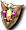
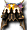
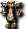
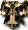
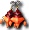
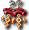
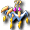

佛雷斯小徑1
威爾德小徑1
因特原野
出現怪物
 哥布林（工匠） 哥布林（工匠） | Lv | AC | MC | AAR | SAR | 掉落物品 |
| HP:35500～ | 120 | -25 | -45 | 5 | 5 | 奧術赫爾莉克、奧術瑪娜莉克、奧術史黛莉克、忘卻的斯科爾菲吉盾、忘卻的斯科爾菲吉岡加盾、  忘卻的雷歐加爾特盾、忘卻的斯科爾菲吉岡加盾、聖職者武器碎片、 防具附魔捲軸、武器附魔捲軸、裝飾附魔捲軸 防具附魔捲軸、武器附魔捲軸、裝飾附魔捲軸 |
| 經驗值 | 名聲值 | 金錢 | 攻擊屬性 | 防禦屬性 | ||
| 8100 | 1800 | 6277 | 隨機 | 隨機 | ||
| STR | DEX | INT | WIS | CON | ||
| 84 | 106 | 84 | 91 | 51 |
備註：非主動攻擊、瀕死時逃亡、即使DEX+HIT+SLV=420也會出現非暴擊的怪物
| 哥布林（獵人） | Lv | AC | MC | AAR | SAR | 掉落物品 |
| HP:41000～ | 120 | -26 | -46 | 7 | 7 |  秘術赫爾莉克、 秘術赫爾莉克、 秘術史黛莉克、 秘術史黛莉克、 快速藥水[30分]、鎖圈、 快速藥水[30分]、鎖圈、 忘卻的斯維特頭盔（女）、 忘卻的斯維特頭盔（女）、 忘卻的斯維特頭帶（男）、 忘卻的斯維特頭帶（男）、 忘卻的門格爾頭盔（男）、忘卻的門格爾頭帶（女）、忘卻的斯科爾菲吉盾、忘卻的斯科爾菲吉岡加盾、忘卻的雷歐加爾特盾、忘卻的斯科爾菲吉岡加盾、 忘卻的門格爾頭盔（男）、忘卻的門格爾頭帶（女）、忘卻的斯科爾菲吉盾、忘卻的斯科爾菲吉岡加盾、忘卻的雷歐加爾特盾、忘卻的斯科爾菲吉岡加盾、 預言者武器碎片、防具附魔捲軸、武器附魔捲軸、飾品附魔捲軸 預言者武器碎片、防具附魔捲軸、武器附魔捲軸、飾品附魔捲軸 |
| 經驗值 | 名聲值 | 金錢 | 攻擊屬性 | 防禦屬性 | ||
| 8700 | 1900 | 9138 | 隨機 | 隨機 | ||
| STR | DEX | INT | WIS | CON | ||
| 85 | 119 | 85 | 92 | 52 |
備註：相鄰時主動攻擊、瀕死時逃亡、即使DEX+HIT+SLV=420也會出現非暴擊的怪物
| 哥布林（樵夫） | Lv | AC | MC | AAR | SAR | 掉落物品 |
| HP:46000～ | 120 | -27 | -47 | 8 | 8 | 奧術赫爾莉克、阿尼姆斯之門、鏽蝕鎧甲、 審判、 審判、 忘卻的雷歐加爾特頭盔（女）、 忘卻的雷歐加爾特頭盔（女）、 忘卻的雷歐加爾特頭帶（男）、 忘卻的雷歐加爾特頭帶（男）、 忘卻的斯科爾菲吉頭盔（男）、 忘卻的斯科爾菲吉頭盔（男）、 忘卻的斯科爾菲吉頭帶（女）、忘卻的斯科爾菲吉盾、忘卻的斯科爾菲吉岡加盾、忘卻的雷歐加爾特盾、忘卻的斯科爾菲吉岡加盾、 忘卻的斯科爾菲吉頭帶（女）、忘卻的斯科爾菲吉盾、忘卻的斯科爾菲吉岡加盾、忘卻的雷歐加爾特盾、忘卻的斯科爾菲吉岡加盾、 忘卻的雷歐加爾特兜帽袍（女）、忘卻的斯科爾菲吉女衫（女）、 忘卻的斯科爾菲吉布衣（男）、 忘卻的斯科爾菲吉長袍（男）、空氣環、掉落環、 戰士武器碎片、防具附魔捲軸、武器附魔捲軸、裝飾附魔捲軸 戰士武器碎片、防具附魔捲軸、武器附魔捲軸、裝飾附魔捲軸 |
| 經驗值 | 名聲值 | 金錢 | 攻擊屬性 | 防禦屬性 | ||
| 9400 | 2300 | 8101 | 隨機 | 隨機 | ||
| STR | DEX | INT | WIS | CON | ||
| 89 | 132 | 87 | 93 | 53 |
備註：相鄰時主動攻擊、瀕死時逃亡、即使DEX+HIT+SLV=420也會出現非暴擊的怪物
| 鼴鼠 | Lv | AC | MC | AAR | SAR | 掉落物品 |
| HP:46000～ | 120 | -5 | -45 | 25 | 25 | 奧術赫爾莉克、奧術史黛莉克、各種微塵電漿、  忘卻的斯科爾菲吉力量耳環、 忘卻的斯科爾菲吉魔力耳環、忘卻的斯科爾菲吉布利特耳環、聖職者武器碎片、防具附魔捲軸、武器附魔捲軸、裝飾附魔捲軸 |
| 經驗值 | 名聲值 | 金錢 | 攻擊屬性 | 防禦屬性 | ||
| 15200 | 3000 | 8269 | 隨機 | 隨機 | ||
| STR | DEX | INT | WIS | CON | ||
| 128 | 128 | 92 | 99 | 41 |
備註 即使DEX+HIT+SLV=420仍會出現非暴擊的怪物
| 獅鷲 | Lv | AC | MC | AAR | SAR | 掉落物品 |
| HP:46000～ | 120 | -20 | -75 | 51 | 51 | 秘術赫爾莉克、秘術史黛莉克、快速藥水[30分]、忘卻的雷歐加爾特力量耳環、忘卻的雷歐加爾特魔力耳環、  忘卻的雷歐加爾特布利特耳環、聖職者武器碎片、防具附魔捲軸、武器附魔捲軸、飾品附魔捲軸 |
| 經驗值 | 名聲值 | 金錢 | 攻擊屬性 | 防禦屬性 | ||
| 15200 | 3000 | 12358 | 隨機 | 隨機 | ||
| STR | DEX | INT | WIS | CON | ||
| 148 | 164 | 83 | 113 | 51 |
備註：迴避破壞。即使DEX+HIT+SLV=420仍會出現非暴擊的怪物
掉落備忘
忘卻的門格爾頭盔（女）
忘卻的門格爾頭帶（女）